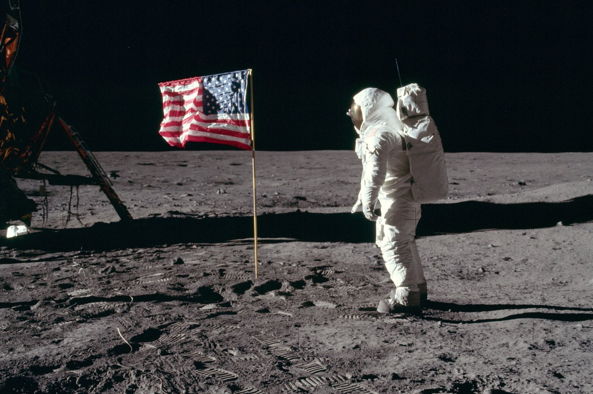
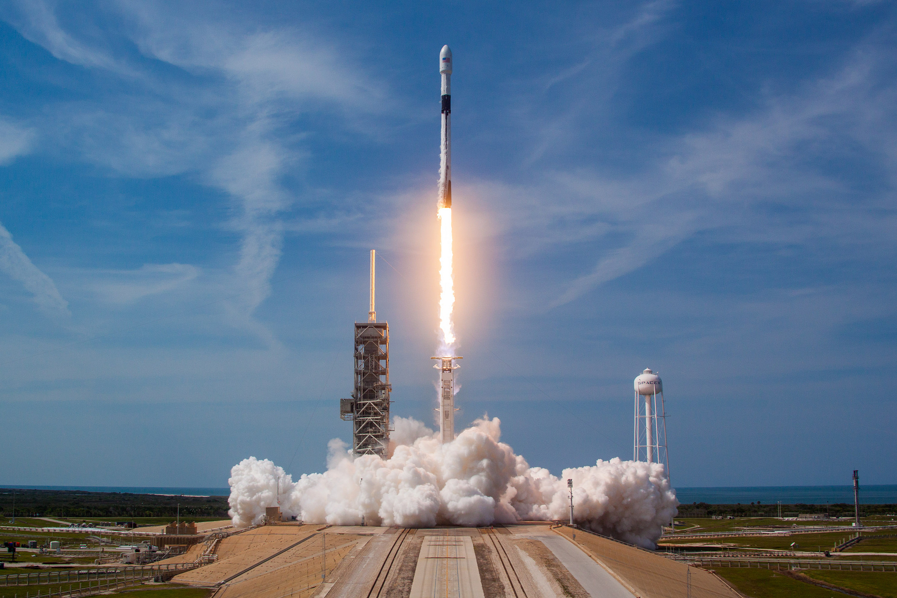
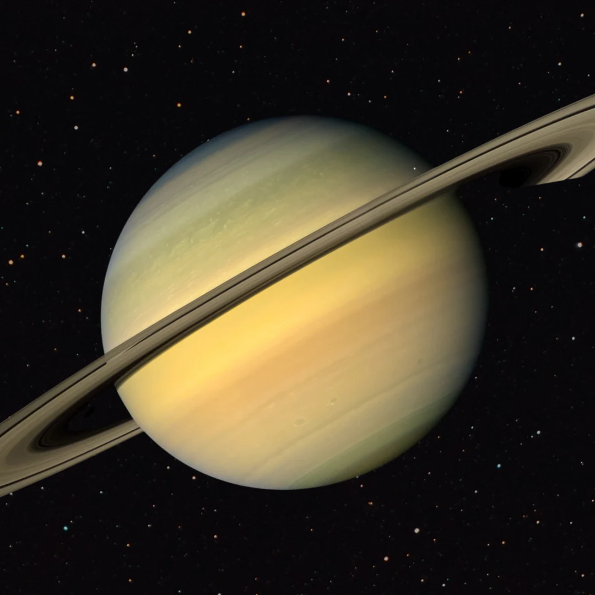
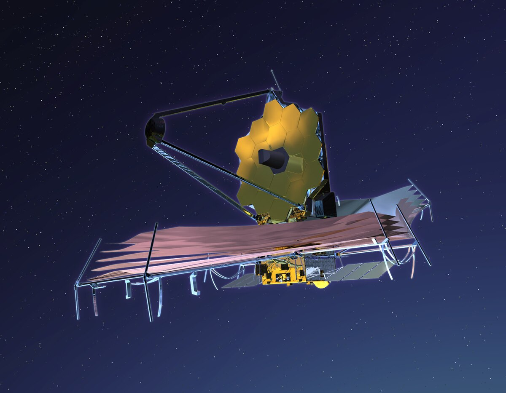

Galeria i multimedia
Zdjęcia, filmy i dźwięki, które ukazują piękno Wszechświata
Start
Misje kosmiczne
Astronauci
Technologie
O autorze
Galeria zdjęć
Międzynarodowa Stacja Kosmiczna

Spacer po Księżycu

Start rakiety Falcon 9
Kolorowa mgławica

Saturn i jego pierścienie

Teleskop Jamesa Webba
Dźwięki z kosmosu
"To mały krok człowieka, ale wielki skok dla ludzkości"
"Houston, mamy problem"
Dźwięki Saturna